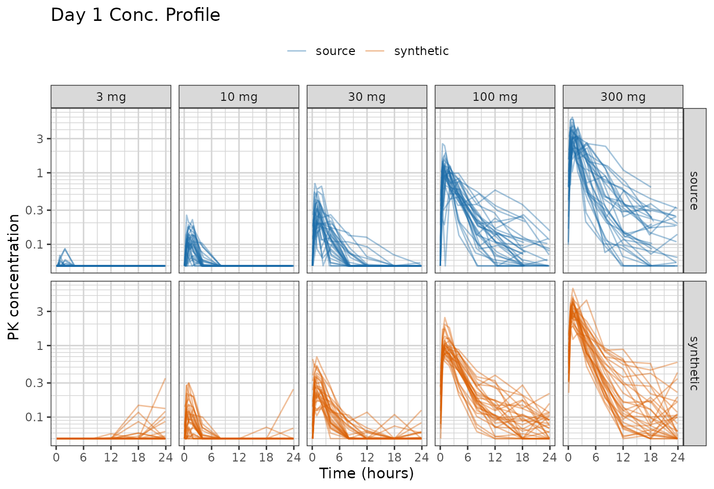
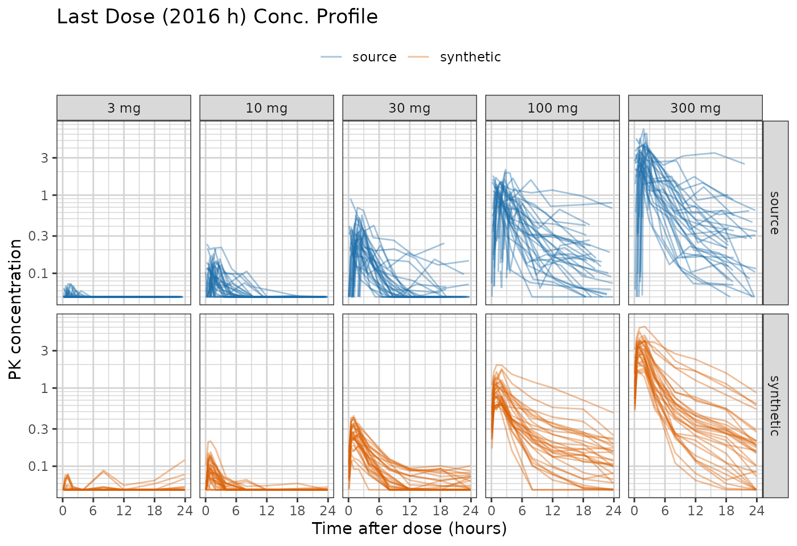
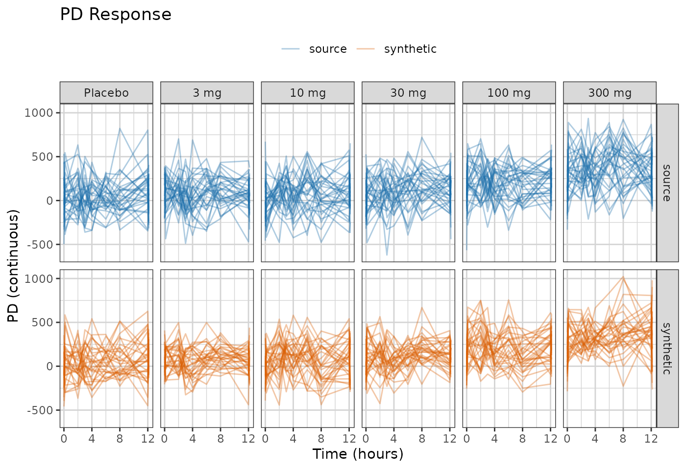
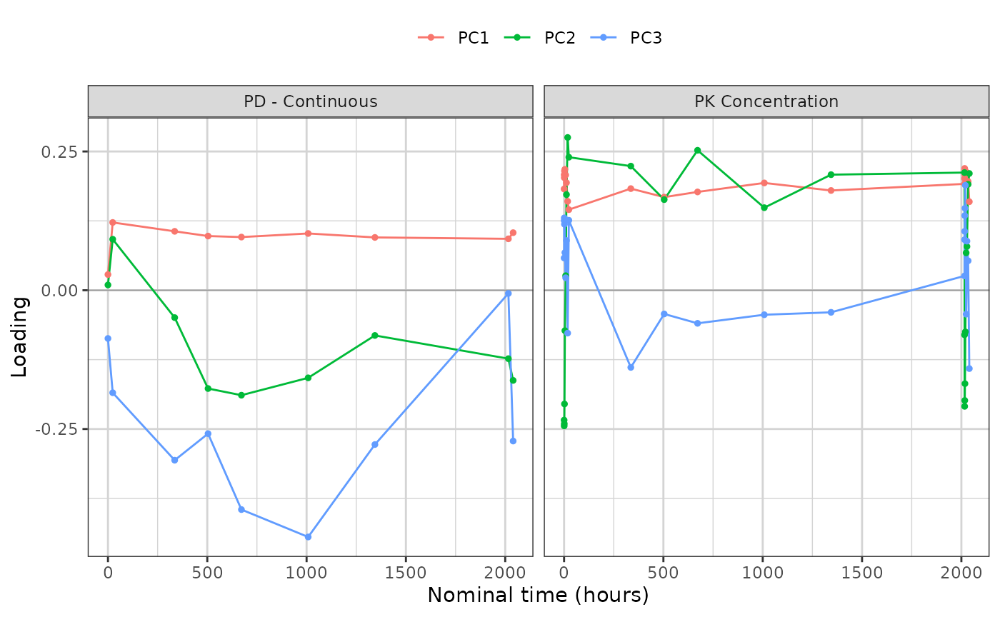
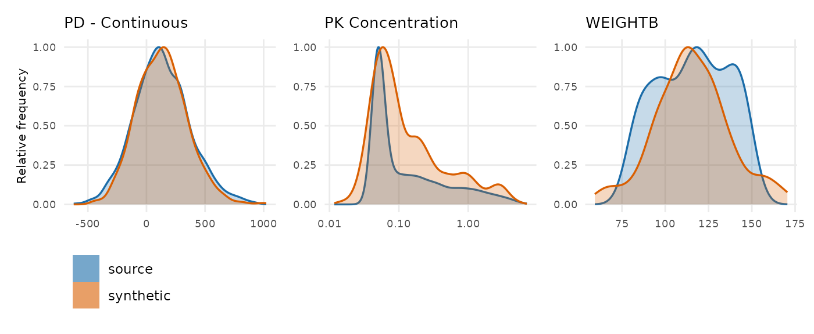

Generate a synthetic dataset from a fitted trial_summary rather than from real patients’ values, look at it, and read the checks of the data.
synpmx_pca_summarize() reduces the study to summaries
and synpmx_pca_generate() builds a dataset from those
summaries alone. No number a patient measured reaches the output. What
it carries out of the source is a mean, a scale, a set of
principal-component loadings, one mean score vector per arm, a residual
covariance, and a dosing and visit trial_summary per arm.
It makes no formal privacy claim, and it is not for estimation. The
full specification is in vignette("pca-algorithm").
The dataset is xgxr::case1_pkpd: 180 patients, six arms
from placebo to 300 mg, with a pharmacokinetic (PK) concentration
endpoint and a continuous pharmacodynamic (PD) endpoint.
Configuration
To run this on your own study, edit the two chunks below that:
- Read in the dataset.
- Define the column roles.
The rest of the code can be kept as is.
library(dplyr)
raw <- as.data.frame(get(utils::data(list = "case1_pkpd", package = "xgxr"))) |>
mutate(CENS = ifelse(NAME == "PD - Continuous", 0, CENS))
SEED <- 808The column meanings. Columns not specified here are dropped from the synthetic dataset.
roles <- pmx_roles(
id = "ID",
time = "TIME",
dv = "LIDV",
cens = "CENS",
amt = "AMT",
evid = "EVID",
cmt = "CMT",
dvid = "NAME", # which endpoint each observation row is
nominal_time = "NOMTIME", # required: the grid the trial_summary is built on
strata = c("TRTACT", "DOSE"), # treatment arms, and the score trial_summary's groups
covariates = "WEIGHTB", # drawn jointly with the trajectories
keep = "STUDY" # carried through verbatim
)Summarize the Study
Generation happens in two steps, and they are separate so that the
first can be looked at before the second runs.
synpmx_pca_summarize() is the only step that reads patient
data.
trial_summary <- synpmx_pca_summarize(raw, roles)
trial_summary
#> A trial summary, from synpmx_pca_summarize()
#>
#> fitted on 180 patients, 6 arm(s): Placebo / 0 (30), 3 mg / 3 (30), 10 mg / 10 (30), 30 mg / 30 (30), 100 mg / 100 (30), 300 mg / 300 (30)
#> endpoints PD - Continuous (9 visits modelled), PK Concentration (24 visits modelled)
#> covariates WEIGHTB
#> components 11 (91% of variance)
#> dose term factor
#> dosing 85 planned cycle(s) per arm | no reductions, interruptions or early stops
#>
#> synpmx_pca_generate() reads this object and nothing else. To look inside it:
#> pca_report() what it read out of the source data
#> pca_dosing() the planned dose schedule, per arm
#> pca_dose_rates() reduction, interruption and discontinuation
#> pca_visits() the probability of a visit, per arm
#> pca_components() the loadings, over timenominal_time is required. The grid it
names is the axis every feature sits on, and dose rows and observation
rows are placed on it together, so the timing comes through at its
source values: doses per patient, the last dose, the end of follow-up,
the baseline sample before the first dose. A study that does not carry a
nominal-time column needs the protocol’s planned times added as one
first: choosing where a visit belongs is a statement about the protocol
rather than something to infer from recorded times.
strata is load-bearing. It names the arms, and the arms
are the groups the score trial_summary is fitted against: each one gets
its own mean score vector and its own residual covariance. An arm of
fewer than three patients has no spread of its own to trial_summary, so
the function refuses rather than generating from one or two people.
min_arm_patients is where that floor is set.
What the summary read out of the source
show(as.data.frame(pca_report(trial_summary)),
"What the summary read out of the source data")
pca_report(trial_summary)min_patients is the column to read. A grid cell or a
covariate mean is backed by most of the cohort; a per-arm quantity is
backed by one arm.
The dosing trial_summary
Dosing is not copied from anybody. Each arm contributes a planned schedule and three rates saying how its patients departed from it.
show(head(pca_dosing(trial_summary), 6), "The planned schedule, first cycles")
show(pca_dose_rates(trial_summary), "How patients departed from the plan")
head(pca_dosing(trial_summary), 6)
pca_dose_rates(trial_summary)All three rates are zero here and each arm has a single dose level, so every generated patient receives the planned schedule exactly, and the generated dataset holds the same 85 doses per patient the source did.
That is the point of expressing it this way rather than copying a
schedule. On an oncology study the same three rates are not zero:
patients are reduced to a fraction of their starting dose, skip cycles,
and come off treatment at different times, and generated patients then
differ from one another in the same way the source patients did.
Relative dose intensity and time on treatment are often what such a
dataset exists to analyse. vignette("pca-algorithm") sets
out how the rates are estimated and what they do and do not protect.
The visit trial_summary
library(ggplot2)
library(xgxr)
xgx_theme_set()
comparison_colours <- c(source = "#1B6CA8", synthetic = "#D95F02")
ggplot(pca_visits(trial_summary), aes(time, probability, colour = arm)) +
geom_line() +
facet_wrap(~endpoint, scales = "free_x") +
labs(x = "Nominal time (hours)", y = "P(observation)", colour = NULL) +
theme(legend.position = "top")
Attendance is drawn per visit from these probabilities, so no real patient’s set of attended visits is reused.
Generate Synthetic Data
Everything above is what the synthetic data will be built from.
synpmx_pca_generate() reads the trial_summary and a subject
count, and no patient row is in scope while it runs.
synthetic <- synpmx_pca_generate(trial_summary, seed = SEED)synpmx_pca(raw, roles, seed = SEED) is the same two
calls in one, for when there is no reason to stop and look.
Plot synthetic data and original data
both <- rbind(
cbind(raw[, names(synthetic)], DATA = "source"),
cbind(synthetic, DATA = "synthetic")
)
obs <- both[both$EVID == 0 & !is.na(both$LIDV), ]
obs$TRTACT <- factor(obs$TRTACT,
levels = c("Placebo", "3 mg", "10 mg", "30 mg",
"100 mg", "300 mg"))
ggplot(obs[obs$NAME == "PK Concentration" & obs$TIME <= 24, ],
aes(TIME, LIDV, group = ID, colour = DATA)) +
geom_line(alpha = 0.4) +
facet_grid(DATA~TRTACT) +
xgx_scale_y_log10() +
xgx_scale_x_time_units("hours", breaks = seq(0, 24, by = 6)) +
scale_colour_manual(values = comparison_colours) +
labs(x = "Time (hours)", y = "PK concentration", colour = NULL) +
theme(legend.position = "top") +
ggtitle("Day 1 Conc. Profile")
case1_pkpd samples richly twice: on day 1 above, and
again around the last dose at 2016 h. The second profile is the one that
says whether the generator held together over the whole study rather
than only at its start.
last_dose <- obs[obs$NAME == "PK Concentration" &
obs$TIME >= 2016 & obs$TIME <= 2040, ]
last_dose$TAD <- last_dose$TIME - 2016
ggplot(last_dose, aes(TAD, LIDV, group = ID, colour = DATA)) +
geom_line(alpha = 0.4) +
facet_grid(DATA~TRTACT) +
xgx_scale_y_log10() +
xgx_scale_x_time_units("hours", breaks = seq(0, 24, by = 6)) +
scale_colour_manual(values = comparison_colours) +
labs(x = "Time after dose (hours)", y = "PK concentration", colour = NULL) +
theme(legend.position = "top") +
ggtitle("Last Dose (2016 h) Conc. Profile")
The censored fraction in this window tracks the source arm by arm, and so do the medians in the two arms that have enough above-limit data to have one.
blq <- function(data, label) {
rows <- data$EVID == 0 & data$NAME == "PK Concentration" &
!is.na(data$LIDV) & data$TIME >= 2016 & data$TIME <= 2040
out <- aggregate(list(pct_blq = data$CENS[rows] == 1),
list(arm = data$TRTACT[rows]), function(x) round(100 * mean(x)))
out$median <- aggregate(list(m = data$LIDV[rows]),
list(arm = data$TRTACT[rows]),
function(x) round(stats::median(x), 3))$m
stats::setNames(out, c("arm", paste0(c("pct_blq_", "median_"), label)))
}
blq_table <- merge(blq(raw, "source"), blq(synthetic, "synthetic"), by = "arm")
if (has_dt) show(blq_table, "Censoring in the last-dose window") else blq_table
ggplot(obs[obs$NAME == "PD - Continuous", ],
aes(TIME, LIDV, group = ID, colour = DATA)) +
geom_line(alpha = 0.35) +
xgx_scale_x_time_units(units_dataset = "hours", units_plot = "weeks") +
facet_grid(DATA~TRTACT) +
scale_colour_manual(values = comparison_colours) +
labs(x = "Time (hours)", y = "PD (continuous)", colour = NULL) +
theme(legend.position = "top") +
ggtitle("PD Response")
The synthetic profiles are smoother than the source ones. The trial_summary holds a handful of components, and everything outside them, including measurement noise visit to visit, is not reproduced.
The low-dose arms sit flat on the assay limit in both panels. That is
the censoring being put back: the drawn value is the latent one, and
where the source declared a lower limit of quantification the reported
value, CENS and LIMIT are rebuilt from it
together. The basis itself is fitted on values drawn inside the
censoring region rather than on the stack of identical limits, so it
describes the patients rather than the assay.
Reading the components
A principal component is a direction in the space of whole trajectories, and its loadings say how much each visit contributes to it. Plotted against time rather than tabulated, the components become curves: a component that is flat and positive across a profile is overall magnitude, and one that crosses zero separates early visits from late ones.
components <- pca_components(trial_summary)
ggplot(subset(components, component %in% c("PC1", "PC2", "PC3") &
!is.na(time)),
aes(time, loading, colour = component)) +
geom_hline(yintercept = 0, linewidth = 0.3, colour = "grey60") +
geom_line() + geom_point(size = 1) +
facet_wrap(~endpoint, scales = "free_x") +
labs(x = "Nominal time (hours)", y = "Loading", colour = NULL) +
theme(legend.position = "top")
variance <- attr(pca_components(trial_summary), "variance_explained")
variance$variance_explained <- round(variance$variance_explained, 3)
variance$cumulative <- round(variance$cumulative, 3)
show(variance, "Variance explained, per component")
attr(pca_components(trial_summary), "variance_explained")Describe what the curve shows rather than naming a mechanism for it.
A component that separates early from late looks like a difference in
decline rate, and calling it a half-life would be a claim the fit cannot
support: no clearance was estimated, and a score standard deviation is a
variance decomposition rather than a pharmacokinetic parameter. That is
the price of this basis, and vignette("pca-algorithm")
states what the alternative would cost.
Distributions of Synthetic and Original Data
compare_pmx_distributions(raw, synthetic, roles)
The scorecard
synpmx_scorecard() computes checks of the synthetic
dataset. Each row names a question, and the explore column
names the call that answers it in full.
scorecard <- synpmx_scorecard(raw, synthetic, roles)
synpmx_scorecard_datatable(scorecard)Fifteen of the eighteen rows read the source and synthetic tables directly and answer for any generated dataset.
Three read unavailable, and that is not the same
as unanswered. B1a, B1b and C2 expect a run record on the
generated table, as a pmx_settings attribute, and this
table carries none. B4a and B4b ask the copy question directly on the
finished tables, and both read zero.
C2 is the one to be careful about. It asks how many
distinct dose-time schedules survived, and this is the row where the
loss is largest — one schedule per arm, against one per patient in a
study recording actual dose times. Read pca_dosing() in its
place, where distinct and share say the same
thing per arm.
Where to go next
-
vignette("pca-algorithm")— every step of this algorithm, and what each one reads out of the source. -
vignette("pca-fingerprint")— every quantity the fingerprint holds, in detail. - Evaluating the PCA generator on public data — the same generator over eight public studies, and what each one’s nominal grid cost.
-
vignette("synpmx-methods")— the other generation modes, and which one to use when.